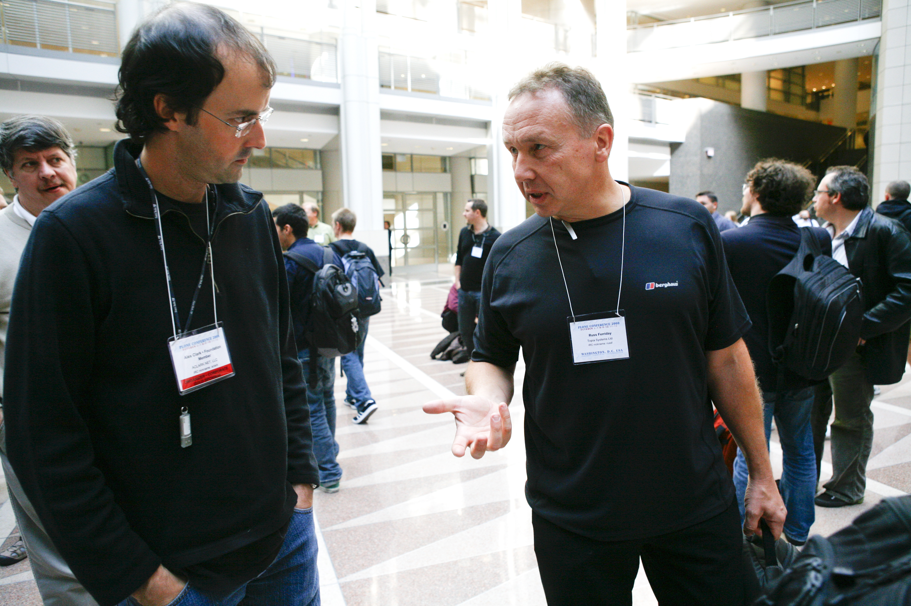
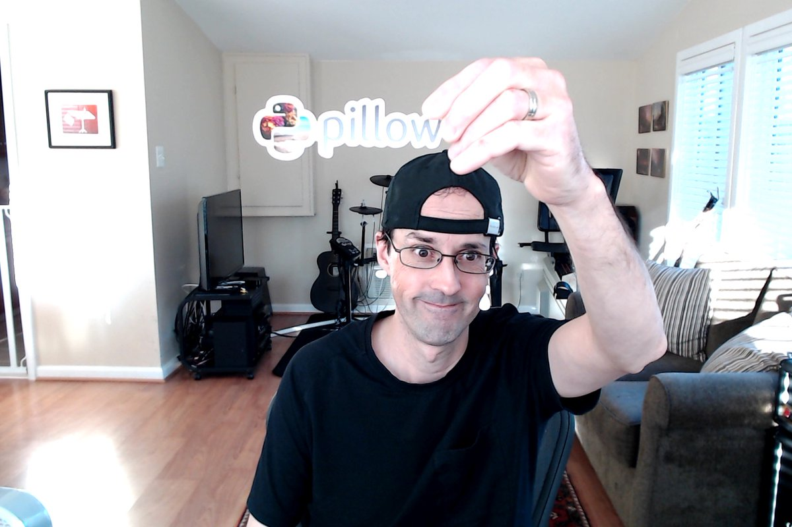
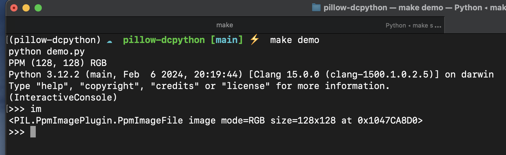
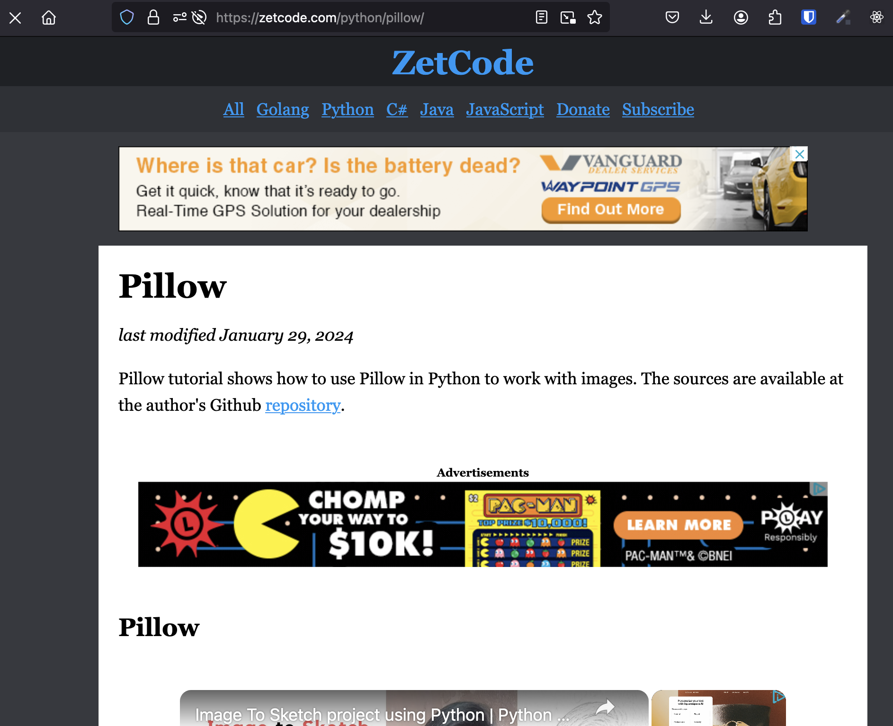
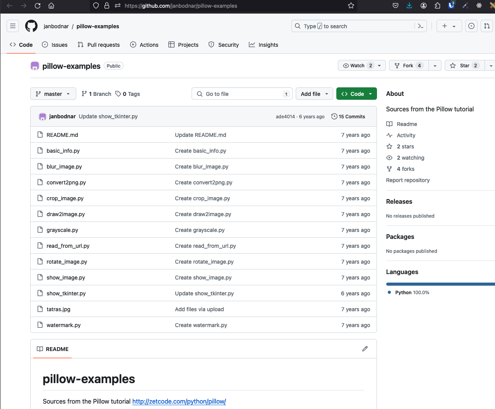
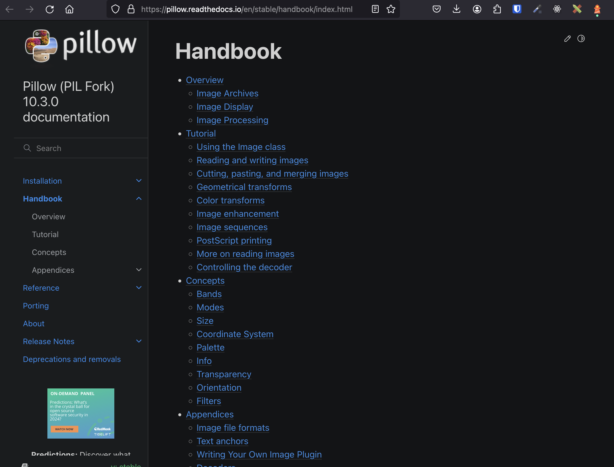
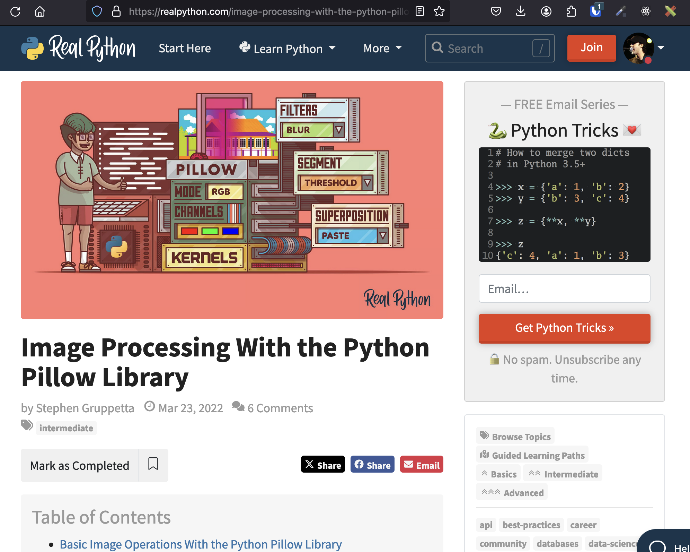

Presented to DC Python Meetup & Austin Python Meetup 4/16/24
Me circa 1998 🤔

Me circa 2008 🤔

Me circa 2020
❤️
Let's pay the maintainers ✨
+
xz
Let's talk about xz
Let's talk about Pillow
(Alex's Version)

https://github.com/python-pillow/pillow-demoOther Examples




Example #1 Open image and print info
>>> im = Image.open("hopper.ppm")
>>> print(im.format, im.size, im.mode)
PPM (128, 128) RGB
Example #2 Rotate image 90 degrees clockwise (270 degrees counter clockwise)
>>> im = Image.open("hopper.ppm")
>>> im = im.rotate(270)
>>> im.save("rotated_hopper.jpg")
Example #3 Convert to jpeg
>>> im = Image.open("hopper.ppm")
>>> im.save("hopper.jpg")
$ file hopper.jpg
hopper.jpg: JPEG image data, JFIF standard 1.01,
aspect ratio, density 1x1, segment length 16, baseline,
precision 8, 128x128, components 3
Example #4 Create thumbnails
im.thumbnail([64, 64])
>> im.save("thumbnail_hopper.ppm")
Example #5 Crop image
im = Image.open("hopper.ppm")
>> im = im.crop([0, 0, 64, 64])
>> im.save("cropped_hopper.ppm")